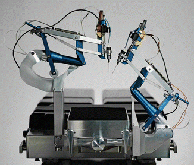

MSModelingAndTFApproach <<
Previous Next >> Develop
MechaFutureAndChallenges


2.5 機器人
與上述高端系統幾乎相反，機器人技術領域也影響機電一體化領域。在這裡，需要計算機科學領域來應對非結構化和不斷變化的環境。在機器人技術方面，開發主要針對視覺、地圖和本地化，因此不僅要了解環境（“世界建模”），還要了解人工智能（AI）領域，這已經是數十年的承諾，但在未來可能會迅速發展。未來幾年。由於即將推出的自動駕駛汽車，這兩個領域目前都處於加速階段。在動力總成（即電力傳動和變速箱）領域以及計算機科學的應用（例如現代汽車中的傳感器）領域，汽車行業的破壞是巨大的，包括實現的自主功能的迅速發展在乘用車和商用車中。
實際上，這一切都與機電一體化、人工智能、控制有關，機器人技術領域（包括自動駕駛汽車）可以被視為機電一體化領域之外的一個單獨的研究領域，但是例如，工業機器人的速度要求或外科機器人（例如下圖的Preceyes機器人）的精度要求必須包括在內。機器人動態行為的描述。從剛體建模到柔性系統的轉變，直接使其成為機電一體化的核心。系統工程思想和系統拓撲優化也是如此，在車輛的混合動力系統中也是如此。那麼機電一體化在哪裡結束而機器人技術在哪裡開始呢？

The Preceyes eye surgery robot
2.6網絡物理系統，智能產業和物聯網
從分散式機電一體化系統向聯網系統的轉變被稱為網絡物理系統領域，指的是控制論領域。 研究的問題是如何在數據包（信息）丟失期間或之後保證穩定性和性能，以及如何處理可變延遲。該領域甚至離機電一體化的硬件還很遠，但是發展如此之快，以至於我們應該問一個問題，即如何在遠程狀態監視和服務領域中將網絡控制系統的潛力納入其中。在接下來的十年中，物聯網（IoT）的爆炸式增長進一步要求找到該問題的答案。
機電一體化將滿足物聯網的一個應用是我們製造業的未來。 工業4.0或智能工業的關注點是關於聯網的現代工業自動化。
- 如果共享物流知識，優化一個工作站的性能作為整個物流或運營的一部分，如果生產設施中的服務和維修可靠，則對於通過製造工廠的貨物流意味著什麼？工作站是否靈活並且可以適應？
- 這對工業機器人和智能機電一體化生產設備意味著什麼？
物聯網不僅會改變現代化的工廠。 據估計，到2020年，將有500億台設備連接到互聯網。 這意味著它將進入我們的家庭、家用設備以及汽車。 當可穿戴電子設備被進一步推動時，我們被傳感器所包圍，我們只需要朝致動一步就可以閉合迴路並進入機電一體化的世界。
2.7走向系統集成
監督這些發展，我們可能會質疑機電一體化到底是什麼或將是什麼。機電一體化是否受到干擾？它已經蒸發到系統工程中了嗎，它是否是支持學科的一部分，它是否擴大成為網絡物理的中堅力量？而且，如果生物系統也將具有如果實施了技術設備（人類互聯網），那麼機電一體化學科的作用是什麼？我們應該如何在機電一體化思維方面對人們進行教育？在圖2.6中，使用系統工程的作用來實現學科和技術貢獻的必要整合。
在本書中，許多提到的發展將得到解決。我們不會對機電一體化的未來及其教育有確切的答案，但是我們也知道，由於我們無法預測未來，因此它應該是強大且適應性強的！我們肯定知道技術發展的步伐正在加快，因此，我們也應該如此！
Fig. 2.6 系統工程學科與技術的整合
參考文獻
- Munnig Schmidt R, Schitter G, van Eijk J (2011) The design of high performance mechatron-
ics. Delft University Press, The Netherlands
- Silvas E, Hofman T, Serebrenik A, Steinbuch M (2015) Functional and cost-based automatic
generator for hybrid vehicles topologies. IEEE/ASME Trans Mechatron 20(4):1561–1572
- Butler H (2011) Position control in lithographic equipment: an enabler for current-day chip
manufacturing. IEEE Control Syst Mag 31(5):28–47
- Steinbuch M, Pahnke K, High Tech Systems Centre. Eindhoven University of Technology.
https://www.tue.nl/en/research/research-areas/high-tech-systems/
- Meenink HCM (2011) Vitreo-retinal eye surgery robot: sustainable precision. PhD thesis,
Eindhoven University of Technology
- Bradley D, Russell D, Ferguson I, Isaacs J, MacLeod A, White R (2015) The internet of
things—the future or the end of mechatronics. Mechatronics 27:57–74
第3章
機電一體化的未來挑戰
3.1引言
在航空航天工業中，掌握機電一體化系統的設計是一項主要要求。確實，程序成本的很大一部分花在了這些系統的設計上，這也代表了產品性能的很大一部分。 在本章中，我們將揭露工業界在機電一體化領域未來幾年將面臨的一些主要挑戰。 這些挑戰涉及設計機電一體化系統，其驗證/確認及其操作。
3.2設計中的挑戰-架構和規模
3.2.1使用模型確定體系結構的大小
嵌入式技術系統的物理體系結構，例如圖3.1a的飛行控制系統的機電執行器或圖3.2b的供電網絡的電力電子模塊，是來自不同技術的組件的組合，Van der Auweraer等人的工作和Hehenberger等。強調了這樣的多域系統的設計需要不同的建模層，如圖3.2所示：
圖3-1嵌入式系統的多域架構
圖3-2嵌入式系統的多域架構
- 機電一體化層必須考慮組件之間的功能和物理耦合。 通常使用0D / 1D模型（也稱為集總參數模型）完成此級別的建模，以代數方程，常微分方程（ODE）或微分代數方程（DAE）表示。
- 基於幾何表示，在上一層中需要一個特定的域層來描述性能極限和參數。特定域現象通常通過偏微分方程（PDE）表示。對於這種水平的建模，可以使用解析模型來簡化幾何，或者對於復雜的2D和3D幾何，例如通過使用數值逼近法（例如有限元方法（FEM））來實現。
從系統集成商的角度出發，功率元件的設計應允許通過多種相互作用的技術來優化組件的尺寸和規格。這種與組件設計不同的系統級設計，需要在機電一體化層中使用專用模型來表示特定領域層的關鍵信息。Budinger等人將其稱為“估計模型”，使設計人員能夠輕鬆地採用多個模型。設計約束。模型圖3.1嵌入式系統的多域體系結構圖3.2分層設計模型（在Hehenberger等人之後）直接且明確地將一些主要特徵（例如組件的總體尺寸）與尺寸確定所需的次要特徵聯繫起來 和優化。 這些估計模型所需的能力如下：
- 可在與最初使用它們的區域稍有不同的區域中重複使用。
為了滿足這些約束，通常使用簡化的分析模型。其中，比例定律已被證明可以有效地代表大範圍變化中的物理現象。但是，這些模型僅在特定條件下有效，其中可以提到幾何形狀，材料相似性和行駛物理現象的唯一性。對於系統設計人員而言，模型應盡可能具有預測性。詳細的有限元模型可以準確預測在這種情況下，物理現象仍然很耗時。儘管最近有工作在減少模型階數上，但在初步設計階段，有限元模型的計算成本仍然很高。因此，為此目的使用元建模技術很有趣。機電設計的挑戰是從集成者的角度開發專門用於選擇系統組件的元建模技術。 Budinger等人的論文。提出了一種基於縮放定律的元建模方法，該定律從局部數值模擬（FEM）中提取估計模型的簡單全局表達式。
3.2.2機電一體化設計學科系統篇
圖3.1中系統的設計受到以下主要方面的驅動，以滿足各種要求：機身與驅動負載之間的集成（質量，幾何包絡），對環境的抵抗力（熱和振動），瞬時功率和節能，動態性能，使用壽命，可靠性，對故障的耐受性或耐受性。 表3.1總結了這些不同的設計觀點以及基於模型的設計可能的關聯建模級別。
優化此類系統時，這些多種設計觀點產生了真正的挑戰。為了在同一循環中考慮這些標準，來自多學科設計優化（MDO）的工具可能會有用。MDO是工程領域，它使用統計和優化方法來解決包含2D / 3D FEM代表的所有相關學科的設計問題同時進行0D / 1D模擬和代數計算。每個特定的計算都被視為一個黑匣子，可以直接調用它，並通過實驗設計（DoE）進行分析。所有計算都可以鏈接在一起，並用於設計探索，靈敏度，優化和穩健性分析； iSight， Optimus和ModelCenter是此類框架的示例。
優化任務需要較少的模型計算時間。替代模型或元模型是另一種模型的簡化或近似描述模型，可以用於表示機電一體化層中的特定領域層模型（FEM）。機電一體化層通常在時域中處理動態系統，並使用瞬態時間仿真，但是在設計優化期間，依靠評估負載曲線的主要諧波來近似時域行為的方法可能很有吸引力。
這些優化和統計支持工具允許以自由選擇的順序鏈接設計過程的步驟。但是，它們在選擇如何構造計算中的連接或將哪些參數作為設計參數，約束或目標考慮在內時沒有提供幫助。
表3.1
基於知識的工程（KBE）是一門結合了基於知識的方法和計算機輔助設計的學科，對設計支持也很有用。KBE軟件包專用於集中特定產品設計的所有知識和專長。 這些環境中使用的科學概念和方法如下：
- 知識庫和計算機輔助設計：使用非定向的代數方程式（聲明性方法）來充分利用組件的知識（這些方法可以很容易地組合起來以描述不同的體系結構）。
- 約束網絡，圖論和優化：以聲明形式最初定義的一組方程式經過定向，以便獲得可用於優化算法的計算程序。
可以通過符號計算，間隔計算或人工智能來支持對等式的適應或分析。這些KBE工具可以是：
- 鏈接到Genus Designer中的CAD軟件，該軟件捕獲配置規則並為Solidworks執行過程自動化。
- 如Enventive中所述，專門用於平面機構的概念設計（優化，公差，靈敏度分析）；
- 開發了多個領域，例如FST研究所軟件（TUHH大學），該軟件在相同的基礎上支持飛機升力機構，液壓網絡和EMA的初步設計；
- 常規，例如TKSolver，Ascend，Cades，Design 43或PaceLab套件，並且通常是聲明性語言，可以實現一組根據設計目標，代數方程可與不同的輸入配合使用。
這些工具可以為設計人員提供有趣而重要的幫助，尤其是當系統由於多種技術而變得複雜時。結合MDO工具和專用的元建模技術，它們可能代表機電一體化系統設計的未來。
3.2.3綜合最佳架構的能力
在設計機電一體化系統時，可以在體系結構級別設想許多解決方案。選擇最合適的體系結構的任務是一項複雜的任務，目前主要通過手動定義，評估和比較設想的體系結構來完成。在體系結構級別使用設計綜合和優化技術可以使設計人員設想更廣泛的解決方案，其中包括潛在的創新解決方案，並在形式上進行比較（使用定義明確的指標），以選擇合適的解決方案。最合適的一個。
工程設計綜合[23]是一套技術，可基於對人工製品的目的，其預期特性和設計知識（明確形式化或提取的）的知識，對工程人工製品（2D / 3D形狀，建築等）進行綜合。優化技術會迭代地修改一些初始解決方案（通常是隨機生成的），以優化測試解決方案的特性，但是，他們很少考慮設計知識來生成可行的解決方案。
耦合設計綜合和優化可以生成可行的解決方案，並找到性能最佳的解決方案。由於探索的設計空間可能更大並且該過程不受認知偏見（例如信念）的影響，因此它通常比手動過程更有效。但是，這需要能夠評估任何生成的解決方案以及所有定義的選擇標準（優化目標/約束）。這種類型技術的使用示例是機器人手臂[24]，真空吸塵器[25]或飛機駕駛艙[26]的設計。
3.2.4機電一體化的安全性和可用性研究系統篇
可靠性，可用性，可維護性和安全性（RAMS）標准通常是在設計過程中進行的研究的一部分。為了針對這些標準（可靠性，可用性，可維護性等）量化不同體系結構的性能，必須對每種考慮的替代方案進行大量此類研究。
目前，這些研究由建立機電系統RAMS模型並對其進行分析以得出結論的專家進行。RAMS模型通常使用專門的形式來構建，例如Petri網，貝葉斯網絡，可靠性框圖或更高級的語言，例如Altarica [27]和Figaro [28]。
為了加快研究速度，將RAMS研究與（描述性或行為）體系結構模型聯繫起來將是一個優勢。實際上，RAMS研究期間可以重用設計模型中嵌入的許多信息。
第一種方法考慮使用RAMS數據（故障模式，可靠性比率等）豐富設計模型，以便能夠自動生成RAMS模型。例如，SysML [29]模型（具有特定配置文件）可用於自動計算系統級故障率[30]。
另一種方法考慮將設計模型鏈接到RAMS模型，以確保RAMS模型的一致性。在MODRIO項目[31]的框架中，開發了一個原型，以從Modelica [32]模型和Figaro知識庫[33]自動生成Figaro模型。使用Modelica特定的構造從知識庫和其他必要信息中聲明與Figaro塊的對應關係。
3.2.5產品的功能虛擬表示
機電系統的設計和集成是一個多學科的設計過程，需要多個領域進行協作和交換信息。在當今的大型公司和擴展型企業中，掌握這些信息流對於提高設計階段的效率至關重要。
改善團隊之間溝通的一種方法是共享集成了所有觀點的產品的通用虛擬表示。這種表示方式使不同的團隊可以查看其他團隊的約束，並始終可以訪問設計的最新版本。此外，它還可以在仿真過程中考慮來自其他領域的影響。
綜合觀點還可以為決策提供更堅實的基礎，因為它可以了解所有相關學科的所有限制和目標。
這種表示形式的主要技術推動因素是能夠在使用不同工具和數據格式的不同團隊之間交換工程數據，以及能夠集成來自不同學科的模型的能力。
3.3驗證和驗證中的挑戰
3.3.1虛擬驗證系統的能力
機電一體化系統的驗證對工業界（尤其是在航空航天業中）是一項非常昂貴的任務。確實，這既需要係統可用，又需要開發和製造測試平台，而這些測試平台通常無法在程序之間重複使用。降低測試成本的一種方法是虛擬測試。該實踐旨在開發虛擬手段（系統模型和系統仿真環境）來測試系統並驗證其是否符合要求。例如，實際機翼上的測試可以用有限元模型代替。
虛擬測試的主要好處是成本，因為虛擬測試台的成本通常比實際測試台低得多，並且通常可以從一個程序重用到另一個程序。實際上，每個程序的許多系統都是相似的，並且它們的模型通常可以通過有限的努力就可以適應新的設計。
不太明顯的好處是，虛擬測試台可以在比系統在其生命週期中遇到的實際刺激更近的條件下刺激系統。例如，在機翼彎曲測試中，將載荷局部施加在實際的試驗台上，而載荷則可以均勻地施加在虛擬的試驗台上，從而以更準確的方式表示實際載荷。在系統模型中，某些方面（例如熱效應）也可以更輕鬆地考慮到，而如果需要進行實際測試，則它們需要非常昂貴的測試手段。
要啟用虛擬測試，必須很好地管理驗證過程的多個方面。首先，當然必須對模型及其仿真環境進行驗證。這可以通過將結果與測試台數據或飛行測試數據進行比較來完成。在這方面，需要模型校準和不確定性管理技術。
3.3.2正式向模型供應商發出模型請求
模型越來越多地用於在系統上執行驗證和確認（V＆V）活動。這些模型通常由系統的供應商（內部或外部客戶）設計。但是，在功能，有效性範圍，精度等方面能夠陳述模型期望的內容仍然是一個挑戰。實際上，請求者對總體仿真環境（即其他交互模型，仿真輸入等）具有很少的看法，而很少以正式的方式傳達給模型開發者。在將預期模型實際提供給模型請求者之前，這通常會導致多次迭代。
最近，模型身份證被提出作為模型要求的標準描述[34]。 MIC允許描述模型的某些所需特性，以指導模型的開發。首先，必須定義模型的接口，以描述模型的端口和交換的變量。第二，模型信息的四個部分必須填寫如下：
對象-型號名稱，粒度級別，參考文檔
對像上下文用法-時間計算，工具
方法-模型尺寸，方法，線性
模型質量-準確性，驗證，確認
這種標準化模型規範的另一用途是對現有模型的重用。實際上，對模型的特徵進行形式化可以在模型數據庫中進行搜索，並可以在不同的上下文中重用模型。
3.3.3交換和無縫集成模型的能力
工業合作夥伴之間關於建立多系統仿真平台以驗證機電一體化系統的目標，主要要素是交換和集成模型的能力。目前，模型集成商傾向於迫使其供應商使用一種工具並遵循特定的建模程序（例如AP2633 [35]）。在這方面，模型供應商希望使用自己的工具對系統進行建模。因此，能夠交換和集成來自不同工具的模型將是巨大的進步。
功能模型接口（FMI）計劃[36]通過提供獨立於工具的標準來交換動態模型和進行聯合仿真而朝著這個方向發展。它允許生成“中性格式”模型（以C代碼和xml1文件的形式），這些模型可以無縫集成在兼容平台中。當前，大約有70種工具支持該標準。
這些標準模型交換形式的使用提供了靈活性，因為可以使用許多不同的工具來開髮用於仿真平台的組成模型。因此，模型提供者可以自由選擇和更改其首選工具，而不會影響整個仿真框架。在模型集成者方面，還可以確保靈活性，因為可以在一組可用工具中選擇和更改集成平台，而不會影響現有模型。
這種類型的標準還可能替為滿足特定需求而內部開發或由工具供應商出售的工具之間的許多點對點接口。對於公司而言，這可以節省大量開發或許可成本。
3.3.4通過以下方式對機電系統進行形式驗證楷模
在早期設計階段檢測系統缺陷一直是基於模型的系統工程（MBSE）的核心，以減少全球開發時間，同時提高最終產品的質量。時至今日，仿真是驗證開發中系統行為的最常用方法，但是存在一個固有的主要缺點，即有限數量的測試場景的局限性。
正式的驗證技術可以證明模型確實符合其規範，即使情況是無限的。其中，模型檢查能夠以自動化過程在計算機上執行驗證。
為了確保最佳的可靠性，在航空航天，鐵路，微型計算機等高科技工業領域，以及更普遍的任何關鍵嵌入式系統的開發中，模型檢查的使用已經很普遍。技術和工具已經發展起來，克服了模型檢查的某些原始限制，如今可以處理具有連續和離散零件的物理模型。這被稱為混合模型檢查，這開闢了新的應用前景，尤其是在機電一體化領域。
在當前的現有技術中，混合模型檢查器通常限於證明安全屬性（即係統將永遠不會進入一組特定的狀態），因為它們經常依賴於過度逼近。例如，這使他們成為證明飛機避碰機動性正確性的良好候選人。
圖3.3顯示了另一個案例，衛星的任務是根據請求捕獲地球圖像，並在可見時將其下載到地面站。目標是根據特定的地面站配置和每個軌道的最大請求數量，正式驗證衛星的存儲緩衝區不會超出。這些請求是離散的，而數據傳輸則是連續建模的。

圖3.3使用混合模型檢查驗證衛星存儲器
混合模型檢查器的表達方式（例如，它們支持哪種微分方程）和它們提供的過近似方法彼此不同。
當證明安全性還不夠時，混合定理證明如KeYmaera [37]可以用作機電一體化背景下的另一種形式驗證選擇。這些嘗試使所需屬性的數學證明自動化，但是通常需要用戶在演示過程中進行一些高級輸入才能得出結論，這對於復雜的系統可能非常棘手。
3.3.5優化測試活動的能力
有時，由於復雜的建模偽像或可伸縮性問題，對機電一體化系統進行形式驗證是不可行的。不論是否可能，一旦構建了產品以檢查其圖3.3，就仍然需要進行測試活動。圖3.3使用混合模型驗證衛星存儲器，以檢查是否符合規格模型並根據要求對其進行驗證。無論如何，對可以執行的有限數量的測試用例的限制
（首先是在仿真中，然後在現實生活中）使得必須確定最相關和最具代表性的測試用例。
趨勢是自動生成最佳測試用例。有兩個主要因素決定如何完成此任務：首先是測試選擇標準，該標准定義了驅動測試用例生成的因素，其次是測試生成技術，即實際產生結果的算法。兩者的典型示例在下面給出[38]。
測試選擇標準：
- 結構模型覆蓋標準-這些利用模型的結構來選擇測試用例。他們根據從控制流到代碼的思想處理整個模型的控制流。
- 數據覆蓋標準—想法是將數據范圍分為等效類，並從每個類中選擇一位代表。通常通過邊界值分析來補充這種劃分，在邊界分析中，還額外選擇了由約束條件確定的數據范圍或邊界的臨界極限。
- 需求覆蓋標準-旨在覆蓋所有受測非正式系統（SuT）需求。 SuT需求對系統或測試模型/代碼的可追溯性可以支持該標準的實現。幾乎所有測試方法都將其作為目標。
- 測試用例規範-當測試工程師以某種正式符號定義測試用例規範時，這些規範可用於確定將生成哪些測試。明確決定應涵蓋哪組測試目標。
- 隨機和隨機準則—它們大多數適用於環境模型，因為環境決定了SuT的使用模式。一種典型的方法是使用馬爾可夫鏈來指定預期的SuT使用情況配置文件。另一個示例是除了SUT的行為模型之外，還使用統計使用模型。
- 基於故障的標準-這些標準依賴於通常會以故障模型形式設計的典型故障的知識。
測試生成技術：
- 隨機生成-通過採樣系統的輸入空間來完成測試的隨機生成。
- 圖形搜索算法-專用圖形搜索算法包括節點或弧覆蓋算法，例如Chinese Postman算法2，該算法至少覆蓋每個弧一次。
圖3.4使用顯式測試模型（頂部）與設計/規格模型的基於模型的測試（底部）
- 模型檢查-模型檢查是一種用於驗證或偽造系統屬性的技術，但可用於基於給定的反例來生成測試用例。
- 符號執行-符號執行的想法是運行一個不具有單個輸入值而是具有一組輸入值的可執行模型。這些表示為約束。通過這種做法，將生成符號跟踪。通過使用具體值實例化這些跡線，可以得出測試用例。
- 定理證明-通常使用定理證明來檢查直接出現在模型中的公式的可滿足性。在這裡，它使用數學過程來搜索模型的可能執行路徑，從而找到測試用例和反例。
- 在線/離線生成技術-通過在線測試生成，算法可以在測試執行期間對SuT的實際輸出做出反應。這個想法也用於實施反應性測試。脫機測試意味著測試用例在運行之前就已生成。一組測試用例僅生成一次，並且可以執行多次。
最合適的測試生成技術通常取決於要處理的源模型的類型。一些方法是根據測試模型創建測試用例的，而另一些方法則將設計模型作為輸入，如圖3.4所示。兩者都可以是行為模型，但第一種描述了測試人員對SuT進行測試的方式（即，他給出了哪些刺激以及他進行了驗證），而後者則描述了SuT的工作方式。因此，觀點（測試者與實施者）以及目標（驗證與解決方案）不同。
3.4運營中的挑戰
3.4.1使用設計模型改善維護的能力
當前，在航空航天系統的維護中很少重複使用設計模型。但是，有關係統行為的知識可用於改善診斷，預後和維護計劃。
在診斷中，行為模型可用於將對系統的觀察結果與某些故障模式或組件的某些退化相關聯。由於可以檢測到系統故障的根本原因而無需檢查所有部件，因此這允許以更準確和更快的方式估計組件的當前狀態（例如，過濾器堵塞）和維護操作的性能。
同樣，預測活動會嘗試預測系統的未來狀態，以便預測故障併計劃預防性維護任務。例如，通過分析由其傳感器傳輸的數據來估計系統的剩餘使用壽命，可以規劃特定的維護任務（例如，儲油箱加註），以預測所需的資源（備件）並相應地調整操作。
從技術上講，使用模型進行診斷/預後通常需要狀態估計技術（例如線性回歸，卡爾曼濾波器）。這些技術允許通過播放模型的某些參數（故障，降級）來最小化實際系統和模型上的觀測值之間的誤差。以來
模型的幾種配置可能與觀察到的行為相匹配，觀察到的變量的定義是有效診斷的主要驅動力。
實際上，由於所需的計算資源，並非總是可以嵌入模型。但是，可以根據透射遙測（離線PHM）在地面上完成診斷/預後任務。
3.4.2使用設計模型改善控制能力
設計模型用於改善操作的另一種用途是將其用於系統控制。實際上，在某些情況下，有必要在系統的控制邏輯中使用行為模型中包含的知識。這稱為模型預測控制（MPC）。如果系統動力學較慢（例如化工廠）或控制系統必須考慮長期使用系統（例如計劃任務資源使用），則MPC的使用特別適合。
MPC的用法示例是能源管理。例如，可以在功率控制算法中使用混合動力推進車輛的簡單模型來優化燃油消耗和給定特定任務的電池使用。與經典控制算法相比，這可以顯著提高性能。但這種智能算法的認證仍然是一個挑戰。
而且，由於嵌入式模型受實時需求的限制，並且由於設計模型通常不是為此類應用程序而設計的，因此必須實現模型的簡化。這種簡化過程會在模型的實時性能和表示性之間進行權衡。
3.5結論
從工業角度看，機電一體化系統設計中的一些主要挑戰已暴露出來。這種發展的主要動力是減少開發成本和時間，以及在成本和性能方面改進設計產品。可以看出，許多挑戰都涉及產品的虛擬化，以改善其設計，驗證或操作。實際上，虛擬化可以以較低的成本在開發的不同階段提供更大的靈活性。在設計中，組件的多樣性和特定領域，機電一體化系統需要在設計過程中將FEM和系統級模型無縫集成。為此，借助基於圖形的MDO方法，未來的工作可以集中在用於機電一體化大小調整活動和模型易於組裝的專用元模型上。在V＆V中，未來的工作應集中在機電系統的正式驗證上，因為它將大大降低認證成本。
References
- Budinger M, Reysset A, Halabi TE, Vasiliu C, Mare J-C (2013) Optimal preliminary design of electromechanical actuators. Proc Inst Mech Eng Part G J Aerosp Eng 228(9):1598–1616
- Giraud X, Budinger M, Roboam X, Piquet H, Sartor M, Faucher J (2014) Methodologies
for the optimal design of the integrated modular power electronics cabinet. In: European
Conference on More Electric Aircraft
- van der Auweraer H, Anthonis J, de Bruyne S, Leuridan J (2012) Virtual engineering at work:the challenges for designing mechatronic products. Eng Comput 29(3):389–408
- Hehenberger P, Poltschak F, Zeman K, Amrhein W (2010) Hierarchical design models in
the mechatronic product development process of synchronous machines. Mechatronics
20(8):864–875
- Liscouët J, Budinger M, Maré J-C, Orieux S (2011) Modelling approach for the simulation based preliminary design of power transmissions. Mech Mach Theory 46(3):276–289
- Pahl G (2007) Engineering design: a systematic approach. Springer, Berlin
- Budinger M, Passieux J-C, Gogu C, Fraj A (2014) Scaling-law-based metamodels for the sizing of mechatronic systems. Mechatronics 24(7):775–787
- Sobieszczanski-Sobieski J, Haftka R (1997) Multidisciplinary aerospace design optimization:survey of recent developments. Struct Optimisation 14(1):1–23
- Dassault Systems Isight webpage www.3ds.com/productsservices/simulia/products/isight-simulia-execution-engine/latestrelease/?xtmc=isight&xtcr=1 and www.simulia.com/products/portfolio/. Accessed 10 Nov 2015
- Noesis Optimus website www.noesissolutions.com/Noesis/. Accessed 10 Nov 2015
3 Future Challenges in Mechatronics 39
- Phoenix Integration ModelCenter www.phoenix-int.com. Accessed 10 Nov 2015
- Malmquist D, Frede D, Wikander J (2014) Holistic design methodology for mechatronic systems. Proc Inst Mech Eng Part I J Syst Control Eng 228(10):741–757
- Allain L (2003) Capitalisation et traitement des modèles pour la conception en génie électrique, Institut National Polytechnique de Grenoble
14.Genus Designer www.solidworks.com/sw/products/details.htm?productID=2104.
Accessed 10 Nov 2015
- Enventive www.enventive.com. Accessed 10 Nov 2015
- Pfennig M, Carl UB, Thielecke F (2009) Recent advances towards an integrated and optimized design of high lift actuation systems. SAE Int J Aerosp 3(1):55–64
- Dunker C, Thielecke F, Homann T (2011) New computer-aided methods for preliminary architecting and sizing of aircraft hydraulic systems, Deutscher Luft- und Raumfahrtkongress
- Universal Technical Systems TKSolver www.uts.com. Accessed 10 Nov 2015
- Ascend www.ascend4.org. Accessed 10 Nov 2015
- Vesta Solutions Cades www.vesta-system.fr/en/products/vestacades/. Accessed 10 Nov 2015
- Alber R, Rudolph S (2003) ‘43’—A Generic Approach for Engineering Design Grammars. In: AAAI Spring Symposium on Computational Synthesis, AAAI Technical Report SS-03-02
- Pacelab www.pace.de. Accessed 10 Nov 2015
- Chakrabarti A (ed) (2013) Engineering design synthesis: understanding, approaches and tools. Springer Science & Business Media, Berlin
- Chakrabarti A, Bligh TP (2009) An approach to functional synthesis of mechanical design concepts: theory, applications, and emerging research issues. Artif Intell Eng Des Anal Manuf 10(4):313
- Wyatt DF, Wynn DC, Jarrett JP, Clarkson PJ (2012) Supporting product architecture design using computational design synthesis with network structure constraints. Res Eng Des 23(1):17–52
- Albarello N (2012) Model-based trade studies in systems architectures design phases, Ecole Centrale Paris
- Arnold A, Point G, Griffault A, Rauzy A (1999) The AltaRica formalism for describing concurrent systems. Fundam Informaticae 40(2–3):109–124
- Bouissou M, Villatte N, Bouhadana H, Bannelier M (1991) Knowledge modelling and reliability processing: presentation of the FIGARO language and associated tools, Electricite de France (EDF)
- OMG SysML www.omgsysml.org. Accessed 10 Nov 2015
- Helle P (2012) Automatic SysML-based safety analysis. In: Proceedings 5th International
Workshop Model Based Architecting and Construction of Embedded Systems
(ACES-MB’12), pp 19–24
- ITEA3 MODRIO www.itea3.org/project/modrio.html. Accessed 10 Nov 2015
- Modelica Specification 3.2 Rev. 2 www.modelica.org/news_items/release_of_modelica_3_2_
revision_2. Accessed 10 Nov 2015
- Bouissou M, de Bossoreille X (2015) From Modelica models to dependability analysis.
IFAC-PapersOnLine 48(7):37–43
- Sirin G, Paredis CJJ, Yannou B, Coatanea E, Landel E (2015) A model identity card to support simulation model development process in a collaborative multidisciplinary design environment. IEEE Syst J, 1–12
- Benac C (2003) A380 simulation models. Airbus Stand Dev New Media Support Centre [OL]
- Blochwitz T, Otter M, Åkesson J (2012) Functional mockup interface 2.0: the standard for tool independent exchange of simulation models. In: 9th International Modelica Conference
- Symbolaris KeYmaera www.symbolaris.com/info/KeYmaera.html. Accessed 10 Nov 2015
- Zander J, Schieferdecker I, Mosterman PJ (2011) Model-based testing for embedded systems. CRC Press, Boca Raton
MSModelingAndTFApproach <<
Previous Next >> Develop